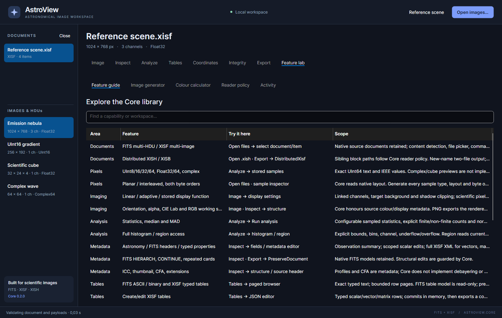

Feature lab and reader settings
Feature lab contains a capability guide, a scientific image generator, a color calculator, reader-policy settings and activity history.

Feature guide
Use the search box to find a capability or workspace. Each row lists an area, feature, Try it here entry point and scope. Read the scope before assuming that visible metadata implies a corresponding processing feature. Rows marked as planned/unimplemented cannot be enabled by changing a setting.
The guide is useful when deciding whether to inspect a native file, re-encode it or convert it. For example, CFA metadata can be preserved without debayering, and an ICC profile can be retained without a complete ICC color-management engine.
Image generator
- Select Image generator.
- Choose a Sample format and Pixel layout.
- Set Width, Height and Channels.
- Optionally select Big-endian sample bytes.
- Click Create reference image.
- Select the new document and inspect, validate or export it.
The generator accepts 1–2,048 pixels per axis and 1–4 channels. Supported sample formats are UInt8, UInt16, UInt32, UInt64, Float32, Float64, Complex32 and Complex64. Planar and interleaved layouts demonstrate the different linear storage orderings used by the sample inspector.
Real-valued patterns use a horizontal gradient with channel offsets. Complex
patterns include real and imaginary components. UInt64 repeats these exact
values: 0, 1, 9007199254740993, 18446744073709551615. That makes it useful
for observing why an exact integer inspector differs from Float64 statistics.
To try this, generate a small UInt64 image, open Analyze, read four stored samples starting at zero, then compare a Float64 region view. The large integer representations need not match exactly after conversion to double.
Generated files are demonstrations created by AstroView. They are not independent evidence of compatibility with another XISF/FITS producer. Complex and scientific cube samples remain inspectable even when a display preview is unavailable.
Colour calculator
Open Colour calculator, enter normalized Red/Green/Blue values and a Midtones parameter, then click Evaluate transforms. Results show XYZ, Lab, a Lab-to-RGB round trip, luminance and the midtones transfer of the red component.
The calculator uses Core's default D50-adapted sRGB working space. It operates on the entered numbers and does not recolor the selected document. To change an image's preview, use Image → DISPLAY instead. The calculator is not an ICC profile editor or a photometric calibration tool.
Reader policy
Settings here apply to files opened after the changes. They do not replace the policy already captured by a previously opened lazy document. Close and reopen a file when you need it read under different settings.
| Setting | Initial value | Effect |
|---|---|---|
| Maximum XISF block (MiB) | 1024 | Bounds an individual decoded XISF block |
| Total decoded FITS bytes (MiB) | 2047 | Bounds retained raw FITS HDU payloads |
| Strict FITS validation on open | Off | Rejects supported error-level conformance findings instead of retaining them in tolerant mode |
| Allow network resources | Off | Permits a file to request supported network resources under the reader's policy |
| Allow general external filesystem paths | Off | Permits supported general external block paths |
| Allow header-relative paths outside the header directory | Off | Permits relative traversal outside the header's directory |
| Network timeout (seconds) | 30 | Bounds supported network resource operations |
Header-directory-relative blocks remain enabled for distributed files. Keep the referenced block file beside its header when that is the intended layout; there is no need to allow arbitrary external paths just for a normal sibling XISB file.
Core's other budgets remain at their defaults. Raising one setting does not remove every other limit, make decoding incremental, or ensure enough memory. Permit external access only when it is actually required by a file/location you intend to read. The app stays local for ordinary files under its default policy.
Activity
Activity records recent operations and results for the current workspace. Use it to confirm which files opened, which output path was saved and which operation failed or was canceled. It complements the status bar and error banner. It is not a persistent project/session file or an automatic backup of your edits.